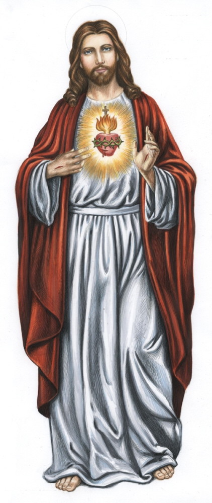

Gebeden
Kruisteken
In de naam van de Vader, de Zoon en de Heilige Geest.
Amen
Onze Vader
Onze Vader,
die in de hemel zijt,
uw Naam worde
geheiligd,
uw Rijk kome,
uw wil geschiede op aarde
zoals in de hemel.
Geef ons heden ons dagelijks brood,
en vergeef ons onze schuld
zoals ook wij aan anderen hun schuld vergeven.
En leid
ons niet in bekoring,
maar verlos ons van het kwade.
Want van U is het Koninkrijk en de kracht en de heerlijkheid in eeuwigheid.
Amen
Wees gegroet

Wees gegroet Maria, vol van genade.
De Heer is met U.
Gij
zijt de gezegende onder de vrouwen.
En gezegend is
Jezus,
de Vrucht van Uw schoot.
Heilige Maria, Moeder van God,
bid voor ons, zondaars,
nu en in het uur van onze dood.
Amen
Glorie zij de Vader
Glorie zij de Vader en de Zoon en de Heilige Geest,
Zoals het was in het begin, en nu, en altijd, en in de eeuwen der eeuwen.
Amen
Geloofsbelijdenis (Nicea-Konstantinopel)
Ik geloof in één God de almachtige Vader
Schepper van hemel en
aarde, van al wat zichtbaar en onzichtbaar is.
En in één Heer,
Jezus Christus,
eniggeboren Zoon van God,
vóór alle
tijden geboren uit de Vader.
God uit God, licht uit licht,
ware God uit de ware God.
Geboren, niet geschapen, één in
wezen met de Vader,
en door wie alles geschapen is.
Hij
is voor ons, mensen, en omwille van ons heil uit de hemel
neergedaald.
Hij heeft het vlees aangenomen door de heilige
Geest uit de Maagd Maria
en is mens geworden.
Hij werd
voor ons gekruisigd,
Hij heeft geleden onder Pontius Pilatus
en is begraven
Hij is verrezen op de derde dag, volgens de
Schriften.
Hij is opgevaren ten hemel: zit aan de rechterhand
van de Vader.
Hij zal wederkomen in heerlijkheid om te
oordelen levenden en doden
en aan zijn rijk komt geen
einde.
Ik geloof in de heilige Geest die Heer is en het leven
geeft
die voortkomt uit de Vader en de Zoon;
die met de
Vader en de Zoon tezamen wordt aanbeden en verheerlijkt;
die
gesproken heeft door de profeten.
Ik geloof in de ene,
heilige, katholieke en apostolische kerk.
Ik belijd één
doopsel tot vergeving van de zonden.
Ik verwacht de opstanding
van de doden
en het leven van het komend rijk.
Amen
Geloofsbelijdenis (apostelen)
Ik geloof in God de almachtige Vader, Schepper van hemel en
aarde.
En in Jezus Christus, Zijn enige Zoon, onze Heer,
Die ontvangen is van de Heilige Geest, geboren uit de maagd
Maria,
Die geleden heeft onder Pontius Pilatus, is gekruisigd,
gestorven en begraven,
Die nedergedaald is ter helle, de derde
dag verrezen uit de doden,
Die opgestegen is ten hemel, zit
aan de rechterhand van God, de almachtige Vader,
Vandaar zal
Hij komen oordelen de levenden en de doden.
Ik geloof in de
Heilige Geest;
De Heilige katholieke Kerk, de gemeenschap van
de heiligen;
De vergeving van de zonden;
De verrijzenis
van het lichaam;
En het eeuwig leven.
Amen
Tien Geboden van God
Ik ben de Heer, uw God.
1. Gij zult geen afgoden vereren, maar
Mij alleen aanbidden en boven alles beminnen.
2. Gij zult de
naam van de Heer, uw God, niet zonder eerbied gebruiken.
3.
Wees gedachtig dat gij de dag des Heren heiligt.
4. Eer uw
vader en uw moeder.
5. Gij zult niet doden.
6. Gij zult
geen onkuisheid doen.
7. Gij zult niet stelen.
8. Gij
zult tegen uw naaste niet vals getuigen.
9. Gij zult geen
onkuisheid begeren.
10. Gij zult niet onrechtvaardig begeren
wat uw naaste toebehoort.
Amen
Vijf Geboden van de Heilige Kerk
1. De verplichte feestdagen te vieren als zondag,
2. op
zondagen en verplichte feestdagen de mis bij te wonen,
3. zich
te houden aan vasten- en onthoudingsdagen,
4. ten minste
eenmaal per jaar te biechten,
5. in de Paastijd waardig te
communiceren.
Oefening van geloof
Mijn Heer en mijn God,
ik geloof; dat Gij zijt één God in drie
Personen,
de Vader, de Zoon en de Heilige Geest;
dat God
de Zoon voor ons is mens geworden en aan het kruis gestorven;
dat Gij het goede loont en het kwade straft.
Ik geloof alles
wat Gij hebt geopenbaard, en door de heilige Kerk ons leert.
Dat geloof ik vast, omdat Gij het hebt gezegd, die alles weet en
altijd waarheid spreekt.
Heer, vermeerder mijn geloof!
Amen
Oefening van hoop
Oneindig goede God,
ik hoop, door de verdiensten van Jezus
Christus, van U te verkrijgen:
de eeuwige zaligheid en alle
genaden, die ik daarvoor nodig heb.
Dat hoop ik met een vast
vertrouwen, omdat Gij het hebt beloofd,
die almachtig zijt,
oneindig goed voor ons en getrouw in uw beloften.
Heer
versterk mijn hoop!
Amen
Oefening van liefde
God van Liefde,
ik bemin U boven alles en uit geheel mijn
hart,
omdat Gij oneindig goed en oneindig beminnelijk
zijt.
Uit liefde tot U bemin ik ook alle mensen als
mijzelf.
Heer, geef mij steeds meerliefde!
Amen
Oefening van berouw
Heer mijn God, ik heb echt berouw.
Ik betreur het dat ik kwaad
heb gedaan
en het goede heb nagelaten.
Door mijn
zonden heb ik U beledigd die mijn hoogste goed zijt,
en alle
liefde waardig.
Het is mijn vaste voornemen, mij, met de hulp
van uw genade,
te bekeren, niet meer te zondigen en te
vermijden
wat tot zonde kan leiden.
Amen
Litanie van alle heiligen
God, hemelse Vader, ontferm U over ons.
God, Zoon, Verlosser
van de wereld, ontferm U over ons.
God, heilige Geest, ontferm
U over ons.
Heilige Drievuldigheid, één God, ontferm U over
ons.
Heilige Maria, bid voor ons.
Heilige Moeder van God, bid voor
ons.
Heilige Maagd der Maagden, bid voor ons.
Heilige
Michael, Gabriel en Rafael, bidt voor ons.
Heilige Abraham,
bid voor ons.
Heilige Mozes, bid voor ons.
Heilige Elia,
bid voor ons.
Heilige Johannes de Doper, bid voor ons.
Heilige Jozef, bid voor ons.
Alle heilige patriarchen en
profeten, bid voor ons.
Heilige Petrus en Paulus, bidt voor
ons.
Heilige Andreas, bid voor ons.
Heilige Johannes en
Jacobus, bid voor ons.
Heilige Thomas, bid voor ons.
Heilige Matteus, bid voor ons.
Alle heilige Apostelen, bidt
voor ons.
Heilige Lucas, bid voor ons.
Heilige Marcus,
bid voor ons.
Heilige Barnabas, bid voor ons.
Heilige
Maria Magdalena, bid voor ons.
Alle heilige leerlingen des
Heren, bidt voor ons.
Heilige Stefanus, bid voor ons.
Heilige Ignatius van Antiochië, bid voor ons.
Heilige
Polycarpus, bid voor ons.
Heilige Justinus, bid voor
ons.
Heilige Laurentius, bid voor ons.
Heilige
Cyprianus, bid voor ons.
Heilige Bonifatius, bid voor
ons.
Heilige Stanislas, bid voor ons.
Heilige Thomas
Becket, bid voor ons.
Heilige John Fisher en Thomas More, bidt
voor ons.
Heilige Paulus Miki, bidt voor ons.
Heilige
Isaac Jogues en Johannes de Brébeuf, bidt voor ons.
Heilige
Petrus Chanel, bid voor ons.
Heilige Carolus Lwanga, bid voor
ons.
Heilige Perpetua en Felicitas, bidt voor ons.
Heilige Agnes, bid voor ons.
Heilige Maria Gorettl, bid voor
ons.
Alle heilige martelaren, bidt voor ons.
Heilige Leo
en Gregorius, bidt voor ons.
Heilige Ambrosius, bid voor
ons.
Heilige Hieronymus, bid voor ons.
Heilige
Augustinus, bid voor ons.
Heilige Athanasius, bid voor
ons.
Heilige Basilius en Gregorius van Nazianze, bidt voor
ons.
Heilige Johannes Chrysostomus, bid voor ons.
Heilige Martinus, bid voor ons.
Heilige Patricius, bid voor
ons.
Heilige Cyrillus en Methodius, bidt voor ons.
Heilige Carolus Borromeus, bid voor ons.
Heilige Franciscus
van Sales, bid voor ons.
Heilige Pius X, bid voor ons.
Heilige Antonius, bid voor ons.
Heilige Benedictus, bid voor
ons.
Heilige Bernardus, bid voor ons.
Heilige Franciscus
en Dominicus, bidt voor ons.
Heilige Thomas van Aquino, bid
voor ons.
Heilige Ignatius van Loyola, bid voor ons.
Heilige Franciscus Xaverius, bid voor ons.
Heilige Vincentius
de Paul, bid voor ons.
Heilige Johannes Maria Vianney, bid
voor ons.
Heilige Johannes Bosco, bid voor ons.
Heilige
Catharina van Siëna, bid voor ons.
Heilige Teresia van Avila,
bid voor ons.
Heilige Rosa van Lima, bid voor ons.
Heilige Lodewijk, bid voor ons.
Heilige Monica, bid voor
ons.
Heilige Elisabeth van Hongarije, bid voor ons.
Alle
heiligen van God, bidt voor ons.
Wees genadig, verlos ons, Heer.
Van alle kwaad, verlos ons,
Heer.
Van alle zonde, verlos ons, Heer.
Van de
hinderlagen van de duivel, verlos ons, Heer.
Van toorn, haat
en alle kwaadwilligheid, verlos ons, Heer.
Van de eeuwige
dood, verlos ons, Heer.
Door uw menswording, verlos ons,
Heer.
Door uw geboorte, verlos ons, Heer.
Door uw
doopsel en heilig vasten, verlos ons, Heer.
Door uw kruis en
lijden, verlos ons, Heer.
Door uw dood en begrafenis, verlos
ons, Heer.
Door uw heilige verrijzenis, verlos ons,
Heer.
Door uw bewonderenswaardige hemelvaart, verlos ons,
Heer.
Door uw uitstorting van de heilige Geest, verlos ons,
Heer.
Door uw komst in heerlijkheid, verlos ons, Heer.
Dat Gij ons wilt vergeven, wij bidden U, verhoor ons.
Dat Gij
onze geest wilt richten op hemelse verlangens, wij bidden U, verhoor
ons.
Dat Gij ons, onze broeders, naasten en weldoeners voor de
eeuwige verwerping wilt behoeden, wij bidden U, verhoor ons.
Dat Gij aan alle overleden gelovigen de eeuwige rust wilt schenken,
wij bidden U, verhoor ons.
Dat Gij de wereld bewaart voor
ziekte, honger en oorlog, wij bidden U, verhoor ons.
Dat Gij
alle volkeren vrede en ware eendracht wilt verlenen, wij bidden U,
verhoor ons.
Dat Gij uw heilige kerk wilt besturen en bewaren, wij bidden U,
verhoor ons.
Dat Gij de paus en alle bedienaren van de kerk in
hun heilig ambt wilt bewaren, wij bidden U, verhoor ons.
Dat
Gij allen, die in Christus geloven, eenheid wilt schenken, wij
bidden U, verhoor ons.
Dat Gij alle mensen tot het licht van
het evangelie wilt brengen, wij bidden U, verhoor ons.
Lam Gods, dat wegneemt de zonder der wereld, ontferm U over
ons.
Lam Gods, dat wegneemt de zonder der wereld, ontferm U
over ons.
Lam Gods, dat wegneemt de zonder der wereld, ontferm
U over ons.
Lam Gods, dat wegneemt de zonder der wereld,
ontferm U over ons.
God, onze toevlucht en onze kracht, wees hier aanwezig bij het gebed van uw kerk, Gij die zelf ons leert bidden, en laat ons werkelijk verkrijgen wat wij gelovig vragen. Door Christus onze Heer.
Amen
Litanie van nederigheid
Heer, ontferm u over ons
Christus, ontferm u over ons
Heer, ontferm u over ons, Christus hoor ons
Christus, verhoor
ons
God, hemelse Vader, ontferm u over ons
God de Zoon,
verlosser van de wereld, ontferm u over ons
God de heilige
Geest, ontferm u over ons
Heilige geest, een God, ontferm u
over ons
Jezus, zachtmoedig en nedering van hart, maar ons hart gelijk aan
het uwe
van het verlangen om gewaardeerd te worden, bevrijd
me, o Jezus
van het verlangen om beming te worden, bevrijd me,
o Jezus
van het verlangen om geëerd te worden, bevrijd me, o
Jezus
van het verlangen om geprezen te worden, bevrijd me, o
Jezus
van het verlangen om verkeur te genieten, bevrijd me, o
Jezus
van het verlangen geraadpleegd te worden, bevrijd me, o
Jezus
van het verlangen om bevestigd te worden, bevrijd me, o
Jezus
van het verlangen om populair te zijn, bevrijd me, o
Jezus
van de angst vernederd te worden, bevrijd me, o
Jezus
van de angst verstoten te worden, bevrijd me, o
Jezus
van de angst afgewezen te worden, bevrijd me, o
Jezus
van de angst als onbenul beschouwd te worden, bevrijd
me, o Jezus
van de angst vergeten te worden, bevrijd me, o
Jezus
van de angst benadeeld te worden, bevrijd me, o
Jezus
van de angst belachelijk gemaakt te worden, bevrijd me,
o Jezus
van de angst verdacht te worden, bevrijd me, o Jezus
Dat anderen meer bemind worden dan ik, Jezus, geef me de genade het
te verlangen
dat anderen meer geacht worden dan ik, Jezus,
geef me de genade het te verlangen
dat in de achting van de
wereld, anderen mogen groeien en ik mag verdwijenen, Jezus geef me
de genad om het te verlangen
dat andere mogen gekozen worden,
en ik opzij gelaten, Jezus, geef me de genade het te verlangen
dat anderen geprezen mogen worden en ik onopgemerkt, Jezus, geef me
de genade het te verlangen
dat anderen mogen de voorkeur
krijgen in alles, Jezus, geef me de genade het te verlangen
dat anderen heiliger mogen worden dan ik, op voorwaarde dat ik zo
heilig worde als ik kan, Jezus geef me de genade het te verlangen
Lam Gods, dat wegneemt de zonden der wereld, wees genadig, spaar
ons, Heer
Lam Gods, dat wegneemt de zonden der wereld, wees
genadig, hoor ons, Heer
Lam Gods, dat wegneemt de zonder der
wereld, wees genadig, ontferm u over ons, Heer
Laat ons bidden
Heer Jezus Christu, die gezegd hebt: “vraag en
je zult krijgen, zoek en je zult vinden, klop en u zal worden
opengedaan, verleen ons, die u smeken, de genade van uw heilige
liefde, dat we van ganser harte mogen beminnen door al onze woorden
en werken en nooit ophouden u te loven.
Heer, geef ons een
eeuwige vrees evenals een eeuwige liefde voor uw heilige naam, want
u houdt niet op zorg te dragen voor hen die zichzelf gevestigd
hebben op de rots van uw liefde. Die leeft en heerst in alle eeuwen
der eeuwen.
Amen.